Dependent ratings within a person: testlet models
Source:vignettes/mfrmr-testlets.Rmd
mfrmr-testlets.RmdA judge scores several criteria for one performance. The judge’s impression of that particular performance may affect all of those scores, even after accounting for the performer’s ability, criterion difficulty and the judge’s usual severity. Treating the scores as conditionally independent can count that shared impression several times. A testlet identifies ratings that share an additional local effect within a person.
The grouping could describe criteria scored by one language examiner, ratings within a clinical station, or dimensions of a music performance. Choose the group from the assessment process, not simply because scores correlate. This model is appropriate only when one ability, the declared fixed facets and the specified independent normal local effects are a defensible account of the assessment.
For decisions about adding tasks versus criteria, unequal rubric lengths, possible halo and task-specific dependence, see Tasks, rubric criteria and testlet dependence. That article includes runnable allocation and score-sensitivity examples. A large local variance does not identify halo, and accounting for dependence does not enforce equal task weights. The current API estimates one common local variance, not a separate variance for each task.
Declare what shares an effect
In this example, Rater has two distinct roles. Its
fixed effect describes that rater’s severity across
persons. Its testlet membership groups that rater’s
criteria within each person. The local effect for Person P01 and Rater
R01 is independent of the local effect for Person P02 and Rater R01. It
is not one random rater effect shared across both persons. For the
latter model, see
vignette("mfrmr-random-raters", package = "mfrmr").
This example corresponds most directly to the distinction between fixed rater severity and Person-by-rater local effects in Wang and Wilson’s random-effects facet model (2005), equations 14–15. Their Rasch testlet model provides the broader block-dependence formulation. The implementation here uses one common local variance; it does not estimate a separate inconsistency parameter for each rater.
ratings <- load_mfrmr_data("example_core")
head(ratings[c("Person", "Rater", "Criterion", "Score")], 8)
#> Person Rater Criterion Score
#> 1 P001 R01 Content 3
#> 2 P002 R01 Content 3
#> 3 P003 R01 Content 4
#> 4 P004 R01 Content 3
#> 5 P005 R01 Content 2
#> 6 P006 R01 Content 3
#> 7 P007 R01 Content 3
#> 8 P008 R01 Content 3Every row belongs to exactly one testlet. A separate
Session or Station column can be used instead
of Rater; it need not also be a fixed facet. Labels may be
reused across persons. If two sittings within the same person have
independent local effects, give them distinct testlet labels. The model
does not infer membership or support overlapping groups.
Fit and check the calibration
testlet_fit <- fit_mfrm_testlet(
ratings, person = "Person", score = "Score", testlet = "Rater",
facets = c("Rater", "Criterion"), score_levels = 1:4,
quad_points = 121
)
testlet_fit$checks
#> $LogLikDifference
#> [1] 4.695266e-10
#>
#> $GradientDifference
#> [1] 2.796459e-08
#>
#> $MomentDifference
#> [1] 2.454624e-09
#>
#> $MaxProjectedGradient
#> [1] 4.308771e-06
#>
#> $VarianceScore
#> [1] 2.00692e-06
#>
#> $PersonVarianceScore
#> [1] 1.742346e-06
#>
#> $Convergence
#> [1] 0
#>
#> $SearchBoundary
#> [1] FALSE
#>
#> $EstimatedVarianceBoundary
#> [1] FALSE
#>
#> $EstimatedPersonVarianceBoundary
#> [1] FALSE
#>
#> $NumericalReady
#> [1] TRUE
#>
#> $InformationPositive
#> [1] TRUE
#>
#> $MinInformationEigenvalue
#> [1] 14.35578
summary(testlet_fit)$data_usage
#> Input Observed Omitted
#> 768 768 0
testlet_fit$calibration$variance
#> [1] 0.04001545
testlet_fit$calibration$person_variance
#> [1] 0.9649161
stopifnot(testlet_fit$checks$NumericalReady,
testlet_fit$checks$InformationPositive)The model uses adjacent-category RSM probabilities, a mean-zero normal ability population with estimated variance, and independent zero-mean normal testlet effects with a common estimated variance. Fixed-facet effects sum to zero; free category steps set the overall location. Estimation is frequentist marginal maximum likelihood, with both ability and local effects integrated using Gaussian quadrature. There are no calibration priors and no additional fitting dependency.
person_sd = NULL, the default, estimates ability
variance as well as local variance. Mean-zero ability and free step
location avoid estimating two interchangeable locations. Supply
person_sd = 1 to fit the earlier N(0,1) model, or another
positive SD only when treating it as known is justified. With a unit
Rasch slope, fixing ability variance is a population restriction, not
merely choosing units. Estimating it still assumes a common normal
population independent of assignment; it does not repair skewness or
different ability populations across rater panels.
NumericalReady checks optimization, search boundaries,
and agreement with a higher integration order.
InformationPositive checks usable local curvature. The
default order is 31; this example uses 121. Inspect the individual
differences when a check fails; increasing quad_points can
resolve integration errors, but cannot repair an unidentified or
unsuitable model. No order is universally sufficient. Failed checks
withhold intervals and block Person scoring. Passing checks does not
establish model fit or frequentist coverage.
The variance can be exactly zero. Such a result does not prove that
the assessment has no local dependence. Ordinary calibration intervals
are withheld at an estimated zero variance; a regular variance interval
is not provided. testlet_variance = 0 is a different
decision: it specifies zero as known and estimates under that restricted
model. A known positive variance can also be supplied; it should not be
treated as known merely because another analysis estimated it.
Ability variance can also be estimated at zero. Both the population
estimate and its boundary status remain visible, but
predict() then returns all requested Persons as
unavailable, with an explanation. It does not report
zero-width ability intervals. variance_max and
person_variance_max bound the searches for local and
ability variance, respectively; hitting either upper bound requires
numerical review.
For comparison with ordinary MFRM, preserve the observed events,
category coding, fixed Rater and Criterion effects, and the ability
population and location convention. With person_sd = 1, use
the fixed N(0,1) ordinary model; with estimated ability variance, the
ordinary model must also estimate its population and its location must
be aligned. A known zero local variance gives the corresponding ordinary
RSM; an estimated zero is a variance-boundary result. Standard
chi-squared likelihood-ratio calibration is not automatic.
compare_mfrm() checks these conditions and compares
centered fixed-facet effects. Separately supplied source-roster scores
add Person comparisons; no preferred model is chosen. Changes in scores
or interval widths alone do not demonstrate better accuracy when the
true abilities are unknown.
Review fixed-rater feedback
subset(testlet_fit$calibration_table, Facet == "Rater")
#> Parameter Facet Level Estimate SE Upper Lower
#> 1 Fixed facet Rater R01 -0.1855659 0.08667868 NA NA
#> 2 Fixed facet Rater R02 -0.3128540 0.08794701 NA NA
#> 3 Fixed facet Rater R03 0.1822338 0.08672443 NA NA
#> 4 Fixed facet Rater R04 0.3161862 0.08790111 NA NA
# Bounds require an explicit choice of approximation and nominal level.
confint(testlet_fit, parm = "calibration", level = .95)
#> Lower Upper
#> Fixed facet: Rater: R01 -0.35545302 -0.01567884
#> Fixed facet: Rater: R02 -0.48522699 -0.14048105
#> Fixed facet: Rater: R03 0.01225702 0.35221053
#> Fixed facet: Rater: R04 0.14390317 0.48846918
#> Fixed facet: Criterion: Accuracy 0.07353605 0.40042901
#> Fixed facet: Criterion: Content -0.56338741 -0.22773899
#> Fixed facet: Criterion: Language -0.06867730 0.25423189
#> Fixed facet: Criterion: Organization -0.09547507 0.22708182
#> Step: Score: 2 -1.63401182 -0.84827987
#> Step: Score: 3 -0.39228181 0.28793898
#> Step: Score: 4 0.91099789 1.69482810
#> attr(,"level")
#> [1] 0.95
#> attr(,"method")
#> [1] "Observed-information normal approximation"
#> attr(,"target")
#> [1] "Fixed-facet and step calibration parameters"
#> attr(,"note")
#> [1] "Pointwise approximation only; nominal coverage is not established. Missing bounds retain numerical, information, boundary or SE restrictions. No variance, Person-difference or rater-quality inference."
plot(testlet_fit, facet = "Rater", intervals = "normal", level = .95)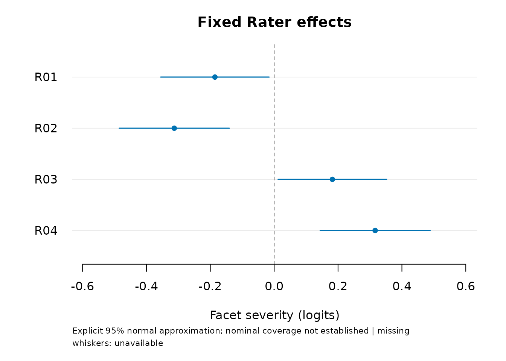
Positive severity means lower expected scores at the same ability and
other facet levels. Default tables retain estimates and approximate SEs
with missing bounds; default plots show points only. The explicitly
requested whiskers above are 95% observed-information normal
approximations for the fixed effects. Their finite-sample coverage
remains unresolved in the estimated-population comparison below. They
are not intervals for a newly sampled rater, tests of rater quality, or
simultaneous pairwise comparisons. Missing whiskers remain missing.
plot(testlet_fit, facet = "Criterion") reviews criterion
effects.
Score persons and interpret their intervals
For people already in the fit, use
score_mfrm_persons(testlet_fit) to reuse the source
ratings. This is the common entry for supported ordinary, shared-rater
and testlet RSMs. The example below uses the testlet-specific
predict() method to supply an explicit rating table. For a
shared-rater model, predict() instead needs supplied
abilities and returns response probabilities.
first <- ratings[ratings$Person %in% unique(ratings$Person)[1:4], ]
scores <- predict(testlet_fit, first)
scores$table
#> Person Observed Testlets Estimate ConditionalSD Lower Upper
#> 1 P001 16 4 0.6051601 0.3174878 -0.009460006 1.236019
#> 2 P002 16 4 1.4255340 0.3581934 0.744853076 2.150047
#> 3 P003 16 4 1.0950556 0.3379523 0.447620707 1.773399
#> 4 P004 16 4 0.7909065 0.3236000 0.166906739 1.436372
#> Status IntegrationDifference Reason
#> 1 available_conditional 2.664535e-15
#> 2 available_conditional 2.664535e-15
#> 3 available_conditional 4.996004e-15
#> 4 available_conditional 5.107026e-15
plot(scores)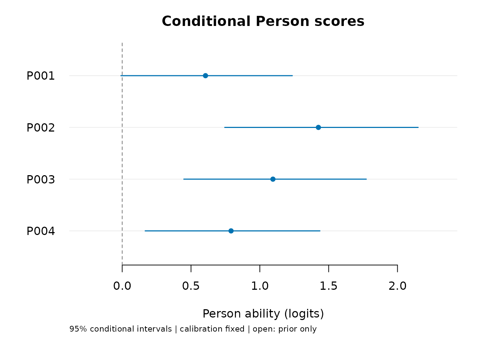
Estimate is the posterior mean (EAP).
ConditionalSD describes the Person posterior spread.
Lower and Upper delimit a continuous
equal-tail posterior interval. The plot therefore labels them
conditional intervals: all calibration values,
including ability and local variances, are held fixed. These intervals
exclude calibration-estimation uncertainty. They are neither
calibration-adjusted confidence intervals nor tests of differences
between persons. A 95% conditional interval does not guarantee 95%
coverage at every fixed ability.
A simulation compared ordinary and testlet RSMs on the same observed ratings, with both models estimating normal ability variance. There were 120 independent datasets per condition, with 12 prespecified Persons scored from each complete calibration sample. True ability SD was 1.3; positive local variance was .8. The balanced design had two tasks with three criteria each.
The table reports marginal coverage, averaging over generated abilities and ratings, after correcting a numerical start-selection issue. Bracketed ranges are 95% Monte Carlo intervals for the simulation result, calculated with datasets as the independent units. They are not Person intervals.
| Condition | Testlet coverage [95% MC interval] | Ordinary RSM coverage |
|---|---|---|
| 120 Persons, no local dependence | 95.1% [93.9, 96.4] | 95.1% |
| 120 Persons, positive local dependence | 94.4% [93.1, 95.8] | 84.9% |
| 24 Persons, positive local dependence | 91.7% [89.7, 93.7] | 83.3% |
| 120 Persons, sparse unequal blocks | 93.3% [91.9, 94.7] | 85.7% |
All 120 panels per condition were available in the corrected replay. In the original run, 115, 113, 119 and 119 panels were available: fourteen cases selected an abnormally terminated optimization start even though a converged start had the same likelihood within floating-point precision. All fourteen passed after the selection repair, with unchanged numerical tolerances. The selection rule leaves 466 of the 480 fits unchanged; four of these successful controls were refitted and retained identical estimates and scores. This replay reuses the generated data; it is not an independent confirmation study. The original outcomes remain recorded. Fitting used 61 quadrature points, with a prespecified 121-point refit for unresolved grid agreement; the results do not establish that the default order of 31 suffices.
Accounting for local dependence improved interval coverage relative to the ordinary model in these three positive-dependence conditions. Point-score accuracy did not consistently improve. Mean squared error measures distance from the generated abilities; smaller is better. On the matched datasets, testlet minus ordinary EAP mean squared error was .00665 [95% MC interval .00190, .01140] with 120 Persons and .05174 [.02582, .07766] with 24 Persons in the balanced design. Thus point errors were larger in those two conditions even though coverage improved. Differences in the null and sparse conditions were inconclusive. Mean conditional interval widths increased by .78, .76 and .67 logits in the three positive-dependence conditions; a wider interval alone does not establish better scoring.
The known-calibration reference had coverage of 94.2–95.7%. In the balanced positive-dependence conditions, fitted-calibration testlet coverage was 1.25 percentage points lower [95% MC interval -2.02, -.48] with 120 Persons and 2.50 points lower [-4.35, -.65] with 24 Persons. This compares all calibration parameters together; it does not isolate the effect of estimating ability variance. The small-sample testlet coverage MCSE was 1.01 percentage points. There was no increase in replication after seeing the outcomes.
The sparse condition retained a common three-criterion task for every Person, plus either two criteria on a second task or one on a third. It changes workload and block length together; it does not test weak/disconnected linking or informative assignment. Unassigned ratings were absent, not imputed. These results concern same-source conditional scores, not new-Person transport, calibration-adjusted intervals, or 95% coverage at every fixed ability. The small and sparse conditions did not establish nominal 95% marginal coverage. Earlier fixed-N(0,1) results remain specific to that population assumption. No sample-size threshold or automatic choice of model follows.
For each person, local-effect integration is checked at two orders,
and the interval endpoints invert a continuous ability CDF. A numerical
failure retains an unavailable row with a
Reason; it does not silently remove the person or replace
the score. Use summary(scores)$status_counts to inspect all
statuses. Successful numerical integration alone does not validate the
ability prior or the local-dependence assumptions.
Missing assigned scores and sparse designs
An unassigned rating is absent from the table. An assigned rating
whose score was not recorded has an explicit NA. The
default rejects missing assigned scores. Use
missing = "omit" only after deciding that analyzing the
observed ratings is appropriate; it records omissions without imputing
scores or correcting informative nonresponse.
incomplete <- first
last_person <- tail(unique(incomplete$Person), 1)
incomplete$Score[incomplete$Person == last_person] <- NA_real_
incomplete$Score[1] <- NA_real_
review <- predict(testlet_fit, incomplete, missing = "omit")
review$table
#> Person Observed Testlets Estimate ConditionalSD Lower Upper
#> 1 P001 15 4 0.6324295 0.3254172 0.002562362 1.279207
#> 2 P002 16 4 1.4255340 0.3581934 0.744853076 2.150047
#> 3 P003 16 4 1.0950556 0.3379523 0.447620707 1.773399
#> 4 P004 0 0 0.0000000 0.9823014 -1.925275381 1.925275
#> Status IntegrationDifference Reason
#> 1 available_conditional 4.440892e-15
#> 2 available_conditional 2.664535e-15
#> 3 available_conditional 4.996004e-15
#> 4 prior_only 0.000000e+00
review$data_usage
#> Input Observed Omitted
#> 64 47 17
plot(review)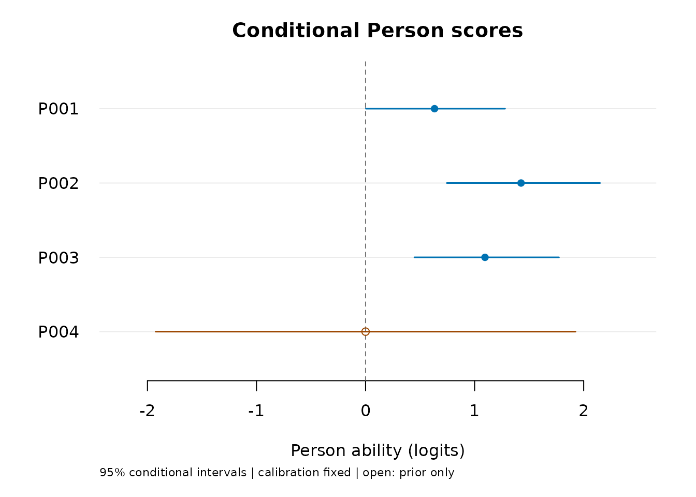
The entirely missing person has status prior_only, mean
zero and the SD stored in
testlet_fit$calibration$person_sd. These are population
values, not measured average performance. The plot uses an open circle
for this case. The partially missing person is scored from the remaining
ratings, with the omission count retained.
Unequal testlet sizes and absent testlets are allowed. For fitting, at least two persons must have multiple observed testlets, and at least two must have repeated ratings within a testlet. Fixed-facet levels must be observed and the fixed design must have full rank. These are initial requirements, not a proof of estimability. Sparse assignments can still provide little information about the local variance. Ability, local effects and assignment are assumed independent; choosing assignments based on unmodeled ability can violate that assumption even without missing scores. Omission and sparse assignment are therefore different issues.
Reuse and save the result
predict(testlet_fit) reuses the source assignment and
its omission policy. For new data, new Person and testlet labels are
allowed; fixed-facet levels must already exist in the calibration.
Supply all ratings to use for each Person in one call.
The function neither appends to cached responses nor conditions on a
saved local-effect estimate. To score additional ratings for an existing
person, supply that person’s complete set with the correct shared
memberships. Do not duplicate the old rows when assembling it.
path <- tempfile(fileext = ".rds")
saveRDS(testlet_fit, path)
restored <- readRDS(path)
stopifnot(identical(restored$parameters, testlet_fit$parameters))
saved_plot <- plot(scores, draw = FALSE)
plot_data(saved_plot)$table
#> Person Observed Testlets Estimate ConditionalSD Lower Upper
#> 1 P001 16 4 0.6051601 0.3174878 -0.009460006 1.236019
#> 2 P002 16 4 1.4255340 0.3581934 0.744853076 2.150047
#> 3 P003 16 4 1.0950556 0.3379523 0.447620707 1.773399
#> 4 P004 16 4 0.7909065 0.3236000 0.166906739 1.436372
#> Status IntegrationDifference Reason
#> 1 available_conditional 2.664535e-15
#> 2 available_conditional 2.664535e-15
#> 3 available_conditional 4.996004e-15
#> 4 available_conditional 5.107026e-15Connect to the common graphics and table workflow
The ordinary fixed-facet model, shared random raters and
Person-specific testlets answer different questions. Use
mfrmr_output_guide("models") to choose the route, then
consult help("mfrmr_workflow_methods") and
mfrmr_interval_guide() for its supported outputs. In
particular, predict() for a shared-rater fit returns score
probabilities at supplied abilities, whereas predict() for
a testlet fit estimates Person abilities from ratings.
The shared plot accessors work directly on the testlet results. They return the stored results without drawing or refitting:
plot_data_components(scores)
#> PlotName Component Role ObjectType Rows Columns
#> 1 testlet_scores table primary_data data.frame 4 10
#> 2 testlet_scores settings settings list:list NA 9
#> 3 testlet_scores labels scalar_or_vector character NA NA
#> 4 testlet_scores title scalar_or_vector character NA NA
#> 5 testlet_scores xlab scalar_or_vector character NA NA
#> 6 testlet_scores ylab scalar_or_vector character NA NA
#> 7 testlet_scores caption scalar_or_vector character NA NA
#> 8 testlet_scores notes summary_or_guidance data.frame 1 2
#> 9 testlet_scores alt_text scalar_or_vector character NA NA
#> 10 testlet_scores display metadata list:list NA 12
#> 11 testlet_scores display_data table_data data.frame 4 7
#> 12 testlet_scores distribution table_data data.frame 0 2
#> 13 testlet_scores distribution_path table_data data.frame 0 2
#> 14 testlet_scores plot_name scalar_or_vector character NA NA
#> 15 testlet_scores legend style data.frame 0 4
#> 16 testlet_scores reference_lines annotation data.frame 0 5
#> Length IsTabular Accessor
#> 1 10 TRUE plot_data(x, component = "table")
#> 2 9 FALSE plot_data(x, component = "settings")
#> 3 4 FALSE plot_data(x, component = "labels")
#> 4 1 FALSE plot_data(x, component = "title")
#> 5 1 FALSE plot_data(x, component = "xlab")
#> 6 1 FALSE plot_data(x, component = "ylab")
#> 7 1 FALSE plot_data(x, component = "caption")
#> 8 2 TRUE plot_data(x, component = "notes")
#> 9 1 FALSE plot_data(x, component = "alt_text")
#> 10 12 FALSE plot_data(x, component = "display")
#> 11 7 TRUE plot_data(x, component = "display_data")
#> 12 2 TRUE plot_data(x, component = "distribution")
#> 13 2 TRUE plot_data(x, component = "distribution_path")
#> 14 1 FALSE plot_data(x, component = "plot_name")
#> 15 4 TRUE plot_data(x, component = "legend")
#> 16 5 TRUE plot_data(x, component = "reference_lines")
#> Notes
#> 1
#> 2 Records resolved plotting options and aliases after normalization.
#> 3
#> 4
#> 5
#> 6
#> 7
#> 8 Use for captions, QA checks, or report text.
#> 9
#> 10
#> 11
#> 12
#> 13
#> 14
#> 15 Use to reproduce color, line-type, or legend mappings.
#> 16 Use with primary data to draw thresholds, labels, and reference lines.
#> ColumnNames
#> 1 Person, Observed, Testlets, Estimate, ConditionalSD, Lower, Upper, Status, IntegrationDifference, Reason
#> 2 level, quad_points, check_points, missing, calibration_uncertainty, estimated_variance_boundary, estimated_person_variance_boundary, person_variance, target
#> 3
#> 4
#> 5
#> 6
#> 7
#> 8 Type, Text
#> 9
#> 10 style, sort, rows, palette, show_title, show_notes, show_labels, reference, text_scale, point_size, limits, padding
#> 11 Label, Estimate, Width, Shape, Colour, Included, Reason
#> 12 Estimate, Cumulative
#> 13 Estimate, Cumulative
#> 14
#> 15 label, role, aesthetic, value
#> 16 axis, value, label, linetype, role
score_table <- plot_data(scores, component = "table")
plot_data(testlet_fit, component = "table", facet = "Rater")
#> Parameter Facet Level Estimate SE Upper Lower
#> 1 Fixed facet Rater R01 -0.1855659 0.08667868 NA NA
#> 2 Fixed facet Rater R02 -0.3128540 0.08794701 NA NA
#> 3 Fixed facet Rater R03 0.1822338 0.08672443 NA NA
#> 4 Fixed facet Rater R04 0.3161862 0.08790111 NA NA
stopifnot(identical(score_table, scores$table))Optional ggplot2 conversion retains all labeled rows,
prior-only symbols, missing whiskers and the interpretation note. It
does not change the model or recalculate an interval. The
incomplete-data result makes those distinctions visible:
if (requireNamespace("ggplot2", quietly = TRUE)) {
figure <- as_ggplot(review)
print(figure + ggplot2::theme_minimal(base_size = 12))
# For a file: ggplot2::ggsave("person-scores.png", figure,
# width = 7, height = 5, dpi = 300)
}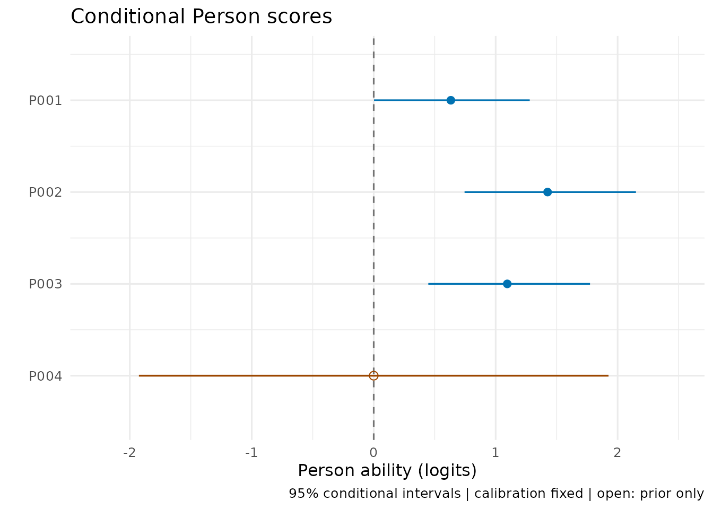
as_ggplot(testlet_fit, facet = "Rater") uses the same
route for fixed-rater effects. For another question,
plot(scores, style = "precision") shows estimates against
conditional interval width; style = "distribution" shows
the empirical cumulative distribution of response-based point estimates,
excluding prior-only and unavailable scores. This is not the latent
population distribution. Shrinkage and Person selection affect it.
The extended-model plots share sort = "estimate" or
"uncertainty", palette = "mono",
show_labels, reference,
text_scale and point_size. Replace
title or caption, use "" to
remove either, or set
show_title = FALSE, show_notes = FALSE when preparing a
figure with a separate caption. These controls also pass through
plot(res, type = "scores", ...). Explain the conditional
interval target in that caption or the surrounding text.
plot_data(scores)$alt_text and $display_data
provide a text alternative and row inclusion/reasons; supply them
alongside images for accessible output. The shared-rater tutorial shows these
views and presentation controls with saved estimates.
plot_data(scores)$settings and
plot_data(scores)$notes retain the basis for custom
displays. Plot data saved by earlier versions can be converted without
refitting; recreating a plot from the saved fit or scores also refreshes
its display metadata.
For table export, keep Status and Reason
rather than selecting only finite scores. An RDS object preserves
settings that a CSV table alone cannot:
Compare fixed effects with an ordinary RSM
For the same rating events, compare the usual rater and criterion effects with an ordinary model that estimates a common normal ability SD. This asks how modeling local dependence changes the fitted fixed effects; it does not test whether the local variance is zero or select a preferred model.
ordinary_fit <- fit_mfrm(
ratings, person = "Person", facets = c("Rater", "Criterion"), score = "Score",
model = "RSM", method = "MML", rating_min = 1, rating_max = 4,
keep_original = TRUE, population_formula = ~1,
person_data = unique(ratings["Person"]), quad_points = 121
)
model_comparison <- compare_mfrm(
ordinary_fit, testlet_fit, labels = c("Ordinary RSM", "Testlet RSM")
)
model_comparison$checks
#> Check Status
#> 1 Observed rating events matched
#> 2 Categories matched
#> 3 Assigned-score omissions matched
#> 4 Facet specification matched
#> 5 Ability population matched
#> 6 Unit and orientation matched
#> 7 Numerical checks passed
#> 8 Descriptive source checks passed
#> Detail
#> 1 Identical multiset; repeated events retain their multiplicity.
#> 2 Identical ordered consecutive categories and adjacent logits.
#> 3 Neither fit omitted assigned rows.
#> 4 Same fixed facets; Person-specific local dependence is the changed structure.
#> 5 Both estimate one common normal SD; raw population locations use different identification conventions.
#> 6 Unit Rasch slope; positive facet effects mean greater severity/difficulty.
#> 7 Descriptive readiness only; does not establish adequacy or interval coverage.
#> 8 Blocked source readiness withholds differences; parameter exclusions remain in the effects table.
model_comparison$effects
#> Facet Level SourceReference SourceComparison CenterReference
#> 1 Criterion Accuracy 0.23250785 0.23698253 0.000000e+00
#> 2 Criterion Content -0.38809689 -0.39556320 0.000000e+00
#> 3 Criterion Language 0.09102647 0.09277729 0.000000e+00
#> 4 Criterion Organization 0.06456257 0.06580338 0.000000e+00
#> 5 Rater R01 -0.18292092 -0.18556593 6.938894e-18
#> 6 Rater R02 -0.30735556 -0.31285402 6.938894e-18
#> 7 Rater R03 0.17863651 0.18223377 6.938894e-18
#> 8 Rater R04 0.31163997 0.31618617 6.938894e-18
#> CenterComparison Reference Comparison Mean Difference
#> 1 1.734723e-17 0.23250785 0.23698253 0.23474519 0.004474682
#> 2 1.734723e-17 -0.38809689 -0.39556320 -0.39183004 -0.007466312
#> 3 1.734723e-17 0.09102647 0.09277729 0.09190188 0.001750824
#> 4 1.734723e-17 0.06456257 0.06580338 0.06518297 0.001240805
#> 5 1.387779e-17 -0.18292092 -0.18556593 -0.18424342 -0.002645009
#> 6 1.387779e-17 -0.30735556 -0.31285402 -0.31010479 -0.005498464
#> 7 1.387779e-17 0.17863651 0.18223377 0.18043514 0.003597266
#> 8 1.387779e-17 0.31163997 0.31618617 0.31391307 0.004546207
#> ReferenceKind ComparisonKind Status Reason
#> 1 Fixed facet estimate Fixed facet estimate available_descriptive
#> 2 Fixed facet estimate Fixed facet estimate available_descriptive
#> 3 Fixed facet estimate Fixed facet estimate available_descriptive
#> 4 Fixed facet estimate Fixed facet estimate available_descriptive
#> 5 Fixed facet estimate Fixed facet estimate available_descriptive
#> 6 Fixed facet estimate Fixed facet estimate available_descriptive
#> 7 Fixed facet estimate Fixed facet estimate available_descriptive
#> 8 Fixed facet estimate Fixed facet estimate available_descriptive
plot(model_comparison, facet = "Rater", style = "difference")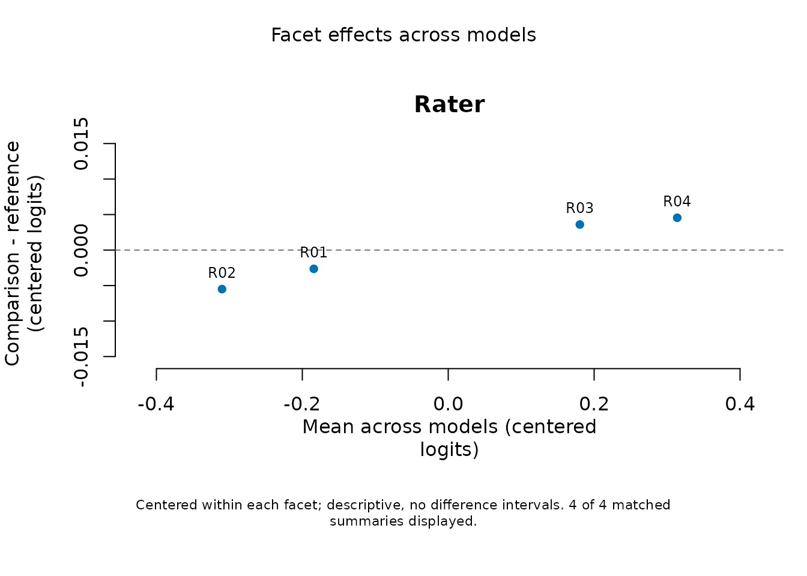
The comparison retains both models’ population and numerical-check
metadata. Within each facet it subtracts the unweighted mean over the
same complete set of levels; the raw values, centers and differences
remain available. Missing level estimates or failed numerical checks
remain unavailable. No difference SEs, limits of agreement, automatic
AIC/BIC preference or chi-squared LRT are computed. The equality or zero
line is an orientation aid. Person scores, step locations and predictive
Infit/Outfit are not compared by this facet output. Use
style = "paired" for an equality-line display, or
as_ggplot() for further styling; title/caption and
accessibility controls are shared.
Observed events, category coding and omitted identities must agree.
New ordinary fits retain prep$omitted_data; old fits that
omitted scores without this provenance need refitting from the complete
assigned roster. Do not match datasets by counts alone. Zero known
testlet variance retains the fixed rater effects, unlike zero
shared-rater variance, which removes rater differences.
Inspect posterior predictive residuals
Do some raters have more residual variability under the testlet model? Compute the predicted category distribution by integrating both ability and the Person-specific local effect. Its variance includes uncertainty in the conditional mean, not just the conditional rating variance. The resulting Infit and Outfit are descriptive summaries of the same data used for fitting. An expected value of one and ordinary-model cutoffs are not established; a lower value is not evidence that a rater should be removed.
response_review <- mfrm_response_diagnostics(testlet_fit, group_by = "Rater")
response_review$measures
#> Facet Level Selected Observed Missing Available Infit Outfit
#> 1 Rater R01 192 192 0 192 0.9072021 0.8970967
#> 2 Rater R02 192 192 0 192 0.7898564 0.8403594
#> 3 Rater R03 192 192 0 192 0.8400569 0.8370092
#> 4 Rater R04 192 192 0 192 0.8908352 0.8739722
#> Status Reason
#> 1 descriptive_only
#> 2 descriptive_only
#> 3 descriptive_only
#> 4 descriptive_only
plot(response_review, style = "paired")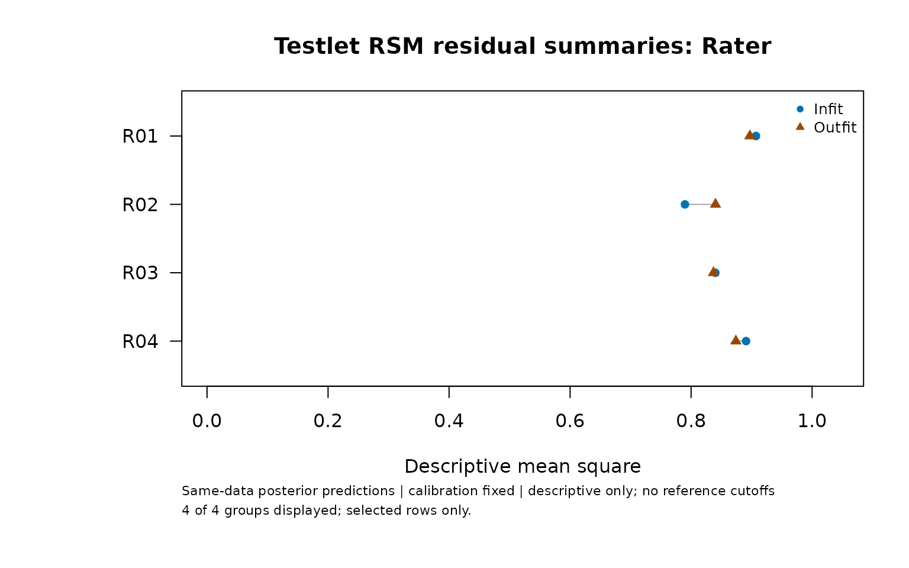
Use style = "scatter" to compare the two indices on
separate axes. palette = "mono",
show_title = FALSE, show_notes = FALSE,
show_labels = FALSE and custom
title/caption control the presentation.
as_ggplot(response_review, style = "scatter") preserves the
definition and text alternative. plot_data() retains
unavailable groups and their reasons.
response_review$rows contains original row numbers,
predicted means, predictive variances and residuals.
response_review$probabilities contains category
probabilities on the declared score scale. Assigned missing scores have
no residual and are not imputed; absent assignments are never added.
Groups with any unresolved observed row have unavailable summaries.
rows = ... selects original rows for output, while the full
observed roster still informs the posterior. This is not held-out
validation or a formal test; ordinary plug-in Infit/Outfit cannot be
compared directly with these values.
Compare predictions on the same definition
Does accounting for Person-local dependence change expected scores
and residual summaries? Calculate the ordinary RSM’s posterior
predictive quantities, then compare them with the saved extension
results. Both models use the same observed ratings and selected events.
The ordinary plug-in indices returned by diagnose_mfrm()
have a different definition and cannot replace this step.
ordinary_response_review <- mfrm_response_diagnostics(ordinary_fit,
group_by = "Rater")
model_comparison <- compare_mfrm(ordinary_fit, testlet_fit,
labels = c("Ordinary RSM", "Testlet RSM"),
response_diagnostics = list(ordinary_response_review, response_review))
model_comparison$responses$measures
#> Facet Level Selected Observed Missing ReferenceAvailable ComparisonAvailable
#> 1 Rater R01 192 192 0 192 192
#> 2 Rater R02 192 192 0 192 192
#> 3 Rater R03 192 192 0 192 192
#> 4 Rater R04 192 192 0 192 192
#> Status Reason InfitReference InfitComparison InfitDifference
#> 1 available_descriptive 0.9361541 0.9072021 -0.02895203
#> 2 available_descriptive 0.8120272 0.7898564 -0.02217078
#> 3 available_descriptive 0.8670492 0.8400569 -0.02699233
#> 4 available_descriptive 0.9286564 0.8908352 -0.03782119
#> OutfitReference OutfitComparison OutfitDifference
#> 1 0.9271525 0.8970967 -0.03005575
#> 2 0.8660166 0.8403594 -0.02565723
#> 3 0.8639734 0.8370092 -0.02696419
#> 4 0.9115644 0.8739722 -0.03759215
plot(model_comparison, metric = "infit", style = "difference")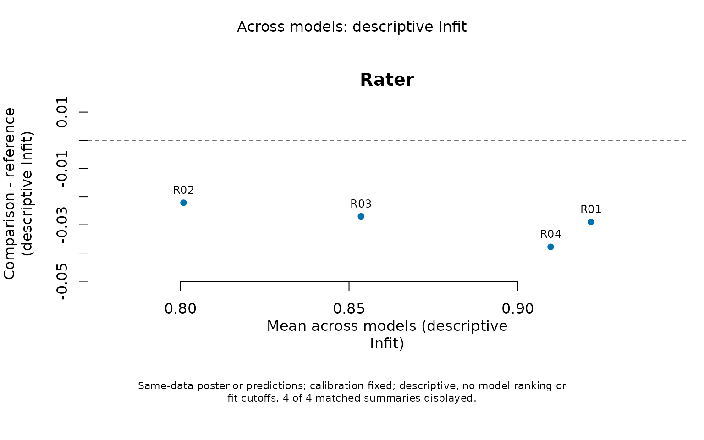
These differences are descriptive and hold each model’s calibration fixed. The zero line means the summaries agree. A smaller Infit does not show that the model is better or the rater is more accurate: these predictions reuse the observations being checked, and their mean squares have no established reference value of one.
as_ggplot(model_comparison, metric = "probability", show_labels = FALSE,
palette = "mono", show_title = FALSE, show_notes = FALSE)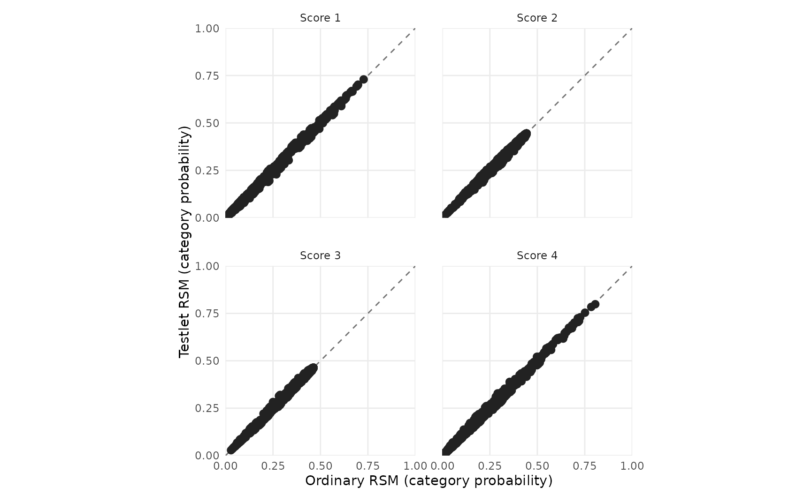
Use metric = "expected_score", "variance"
or "outfit" to change the quantity, and
category = 4 with metric = "probability" to
focus on one score. Expected scores remain on the original scale;
variances are in squared score units. responses$rows
retains both original row numbers and responses$events
identifies each matched rating. Repeated events retain their
multiplicity. If one prediction is unavailable, its difference remains
missing with a reason. Group summaries never silently discard an
unresolved observed row. Row numbers can differ between fits; matching
uses event contents.
The report below saves these comparisons and supports
plot(res, type = "response_comparison", metric = "infit").
To collect the ordinary model’s summaries separately without running its
plug-in diagnostics, use
mfrm_results(ordinary_fit, response_diagnostics = ordinary_response_review, compute = "never").
Plotting, collecting and exporting saved comparisons performs no new
integration.
Compare Person scores and inspect model-aware maps
How do individual scores change when the model accounts for local dependence? Use conditional scores computed from the same complete source roster. Selecting returned Persons does not remove the other observed responses. The ordinary model’s scoring retains its fitted normal mean and variance.
source_scores <- score_mfrm_persons(testlet_fit, persons = scores$table$Person)
ordinary_person_scores <- score_mfrm_persons(ordinary_fit,
persons = source_scores$table$Person)
model_comparison <- compare_mfrm(ordinary_fit, testlet_fit,
response_diagnostics = list(ordinary_response_review, response_review),
person_scores = list(ordinary_person_scores, source_scores))
model_comparison$persons$table
#> Person Observed SourceReference SourceComparison OriginReference
#> 1 P001 16 0.5953652 0.6051601 -0.003130374
#> 2 P002 16 1.4117595 1.4255340 -0.003130374
#> 3 P003 16 1.0788902 1.0950556 -0.003130374
#> 4 P004 16 0.7810130 0.7909065 -0.003130374
#> OriginComparison Reference Comparison ConditionalSDReference
#> 1 0 0.5984956 0.6051601 0.3014066
#> 2 0 1.4148899 1.4255340 0.3446533
#> 3 0 1.0820206 1.0950556 0.3228777
#> 4 0 0.7841434 0.7909065 0.3082582
#> ConditionalSDComparison LowerReference UpperReference LowerComparison
#> 1 0.3174878 0.01633153 1.198926 -0.009460006
#> 2 0.3581934 0.76279224 2.114890 0.744853076
#> 3 0.3379523 0.46579260 1.732550 0.447620707
#> 4 0.3236000 0.19142548 1.400875 0.166906739
#> UpperComparison ReferenceStatus ComparisonStatus
#> 1 1.236019 available_conditional available_conditional
#> 2 2.150047 available_conditional available_conditional
#> 3 1.773399 available_conditional available_conditional
#> 4 1.436372 available_conditional available_conditional
#> Status Reason Difference
#> 1 available_descriptive 0.006664500
#> 2 available_descriptive 0.010644085
#> 3 available_descriptive 0.013035029
#> 4 available_descriptive 0.006763101
plot(model_comparison, metric = "person", style = "difference", show_labels = TRUE)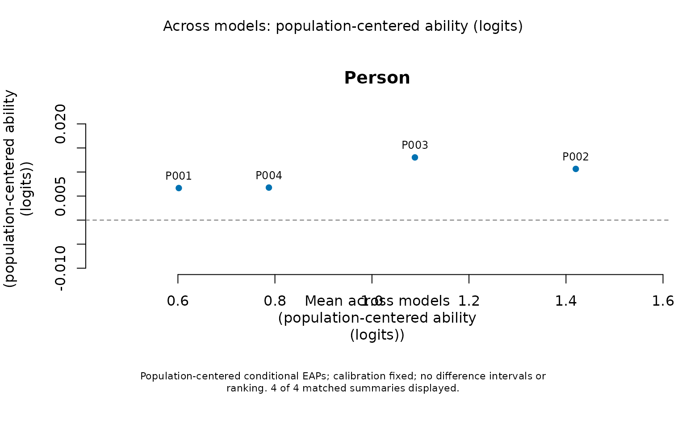
The comparison subtracts each model’s fitted population mean to remove its arbitrary origin; it preserves the Rasch logit unit. It retains raw scores, origins, posterior SDs and conditional endpoints. Shrinkage and population variance can still differ. Separate score intervals do not constitute an interval for their difference, a ranking of models or a test between Persons. Prior-only and unavailable differences remain withheld.
map_results <- mfrm_results(testlet_fit, scores = source_scores,
response_diagnostics = response_review, comparison = model_comparison)
plot(map_results, type = "wright", show_labels = TRUE)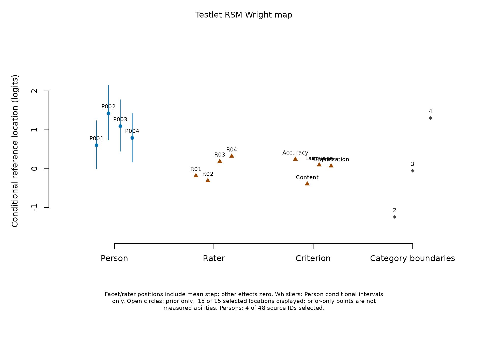
The Person column shows the selected source EAPs. Facet positions equal the severity coefficient plus the mean step location: the average adjacent category boundary when other effects are zero. The category column shows each step at that zero reference. The Person-local testlet effect is set to zero for these reference locations; it has no global facet column. These positions are conditional references, not posterior-averaged category crossings. A higher reference location means more ability is needed to cross the corresponding boundary. Adding several plotted facet locations together would count the mean step more than once; use the model equation for a specific rating profile.
Whiskers show only Person intervals conditional on calibration. Translating an ordinary facet interval by the step mean would omit the covariance and uncertainty of that mean, so no such composite interval is drawn. The separate calibration/rater plots retain their original uncertainty targets.
as_ggplot(plot(map_results, type = "fit_pathway", facet = "Rater",
palette = "mono", show_title = FALSE, draw = FALSE))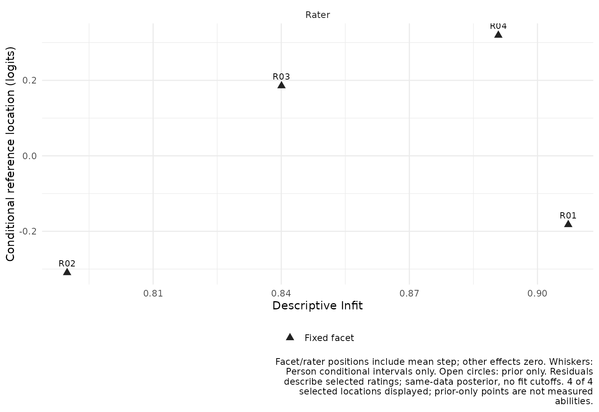
This pathway connects position with the previously defined
descriptive posterior residual index. Here the
summaries include every observed source rating. Use
fit_stat = "Outfit" to change the horizontal index. A large
or small value is a prompt to inspect the selected data, not a
rater-quality classification. No ordinary fit cutoff, ZSTD or automatic
exclusion is supplied.
Use facet, persons,
show_steps, show_intervals and
show_labels to select the display.
show_title = FALSE and show_notes = FALSE hide
annotations while retaining their meaning in plot_data().
Shapes accompany colour; palette = "mono" supports
grayscale output. Tables retain unavailable rows and
original/transformed coordinates. Older saved testlet scores lacking a
complete scoring_data roster must be regenerated from the
saved fit before these maps or score comparisons; no refit is needed.
See ?mfrmr_model_maps.
Build a report from saved results
The common reporting route accepts the fit and separately
computed scores. It never runs predict(), refits
the model or adds ordinary-model diagnostics. The scoring table retains
every requested Person, including prior-only and unavailable rows with
their reasons.
res <- mfrm_results(testlet_fit, scores = source_scores, comparison = model_comparison,
diagnostics = response_review)
res$tables$interval_basis
#> Target
#> 1 Fixed-facet and step calibration
#> 2 Variance component
#> 3 Person ability
#> Interval
#> 1 No automatic calibration interval
#> 2 No regular variance interval supplied
#> 3 95% conditional equal-tail posterior intervals
#> Limitation
#> 1 SEs use observed information. Explicit normal bounds require resolved numerical/information checks and interior estimated variances; nominal coverage is not established. Missing endpoints remain unavailable.
#> 2 An estimated zero variance is a boundary, not proof that dependence is absent.
#> 3 Calibration held fixed; prior_only is prior information; unavailable rows retain their reason.
res$tables$scoring_status
#> Status Persons
#> 1 available_conditional 4
#> 2 prior_only 0
#> 3 unavailable 0
report <- mfrm_report(res)
summary(report, view = "reader")
#> mfrmr Report Summary
#>
#> Overview
#> Style OverallStatus
#> qc caveat
#> FirstAction ReviewAreas
#> Review numerical checks, interval meanings and the rating design. 0
#> NotComputedAreas CaveatAreas OptionalAreas UnavailableAreas OkAreas
#> 0 2 0 0 1
#> SourceInclude
#> fit, diagnostics, tables, precision, reporting, categories, plots
#>
#> Decision
#> - Interpretation: Numerical checks satisfied; model adequacy not assessed
#> - Formal inference: Target-specific limits; no general clearance
#> - Why: Numerical checks are not model-fit diagnostics or evidence of rater
#> quality.
#> - Next: Review numerical checks, interval meanings and the rating design.
#>
#> First screen
#> Area Status Readiness
#> Overall caveat Target-specific review
#> Numerical checks ok Numerical only
#> Interval interpretation caveat Conditional on stated assumptions
#> Model-fit diagnostics caveat Descriptive only
#> MainIssue
#> Numerical checks satisfied; model adequacy not assessed
#> Numerical convergence does not establish model adequacy.
#> Read the target and uncertainty basis for each reported quantity.
#> Same-data posterior predictive residuals have no calibrated reference cutoffs or tests.
#> NextAction
#> Review numerical checks, interval meanings and the rating design.
#> Inspect all stored checks and boundary status.
#> Retain interval limitations, unavailable rows and omitted-score counts.
#> Review selected-row summaries and unavailable rows; do not apply ordinary-model cutoffs.
#> PrimaryRoute
#> report$tables$interpretation
#> report$tables$numerical_checks
#> report$tables$interval_basis
#> report$tables$response_measures
#>
#> Claim readiness
#> Readiness Claims ExampleClaim
#> Not established 1 Model adequacy and general interval coverage
#>
#> Immediate actions
#> Area Status
#> Interval interpretation caveat
#> Model-fit diagnostics caveat
#> MainIssue
#> Read the target and uncertainty basis for each reported quantity.
#> Same-data posterior predictive residuals have no calibrated reference cutoffs or tests.
#> NextAction
#> Retain interval limitations, unavailable rows and omitted-score counts.
#> Review selected-row summaries and unavailable rows; do not apply ordinary-model cutoffs.
#> PrimaryRoute
#> report$tables$interval_basis
#> report$tables$response_measures
archive_dir <- tempfile("testlet-report-")
archive <- export_mfrm_results(res, archive_dir, preset = "starter",
acknowledge_sensitive = TRUE) # Synthetic example; real exports retain IDs
stopifnot(nrow(archive$plot_errors) == 0)
restored_results <- readRDS(file.path(archive_dir, "mfrmr_results_results.rds"))
stopifnot(identical(restored_results$tables$person_scores, source_scores$table))Open index.html in archive_dir for the
model-specific figures and report. CSV files keep all rows; RDS
preserves the fit, scores and their settings. Run the replay script from
that folder to reload the report without fitting or scoring. Scores made
before prediction-source metadata was introduced must be regenerated
with predict() from their saved fit before attachment;
refitting is unnecessary. Matching checks prevent mixing different
column roles, facet levels, calibrations or model settings.
Saved fits can score in a new R session without a live optimizer.
Scores and plot data can also be saved separately. The result is a
distinct mfrm_testlet object: ordinary
mfrm_fit diagnostics, response-MI pooling, portable
calibration objects and random-rater methods do not accept it. Numerical
checks are not model-fit diagnostics. The Shiny viewer, ordinary Wright
map and ordinary plug-in Infit/Outfit diagnostics are unavailable for
this class. The separate posterior predictive summaries above do not
supply formal fit tests or ordinary-model thresholds. An earlier
ordinary model needs a new fit with explicit testlet membership;
changing its saved class does not convert the model.
Earlier saved testlet fits retain their fixed N(0,1) population when
rescored or reported. A new fit estimates ability variance by default;
specify person_sd = 1 to reproduce the earlier model. Keep
a new fit and its newly computed scores together when changing this
assumption; do not attach scores from a different population fit to a
report.
The supported scope is one ability, RSM, unit weights, additive fixed facets and one common variance for independent Person-specific testlets. PCM, heterogeneous or correlated local effects, shared random raters and joint multidimensional abilities need other models. The testlet modeling idea is described by Wang and Wilson (2005), The Rasch Testlet Model.